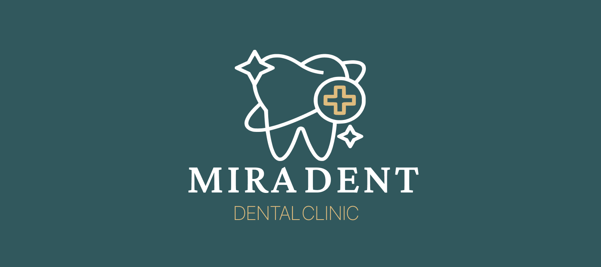
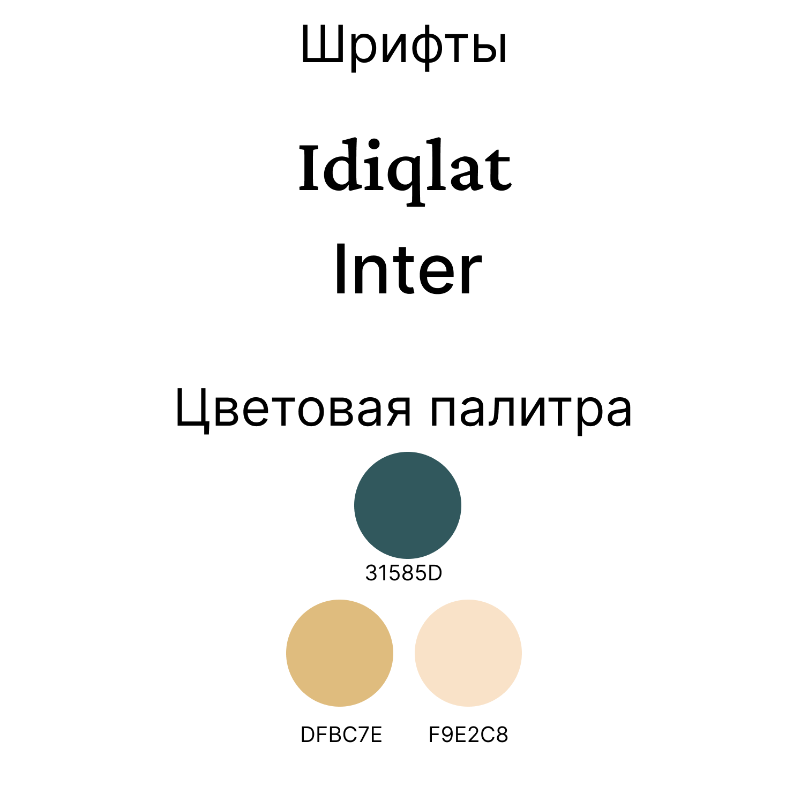
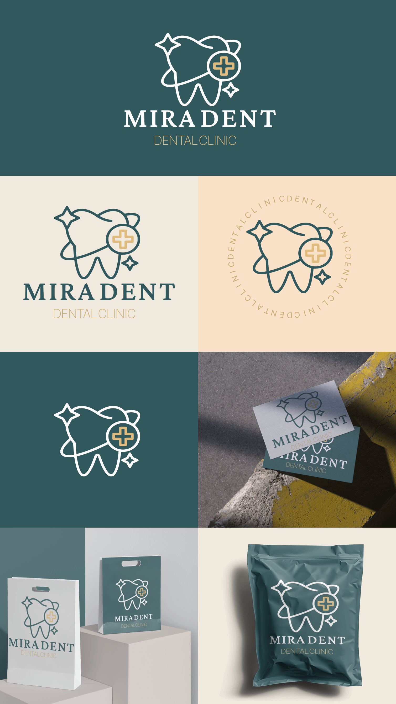

MIRADENT Dental Clinic
Логотип и фирменный стиль стоматологической клиники MIRADENT.

- Клиент
- MIRADENT — стоматологическая клиника
- Задача
- Разработать айдентику стоматологической клиники MIRADENT: логотип, знак, фирменную палитру и шрифтовую пару, а также показать применение на носителях — визитках, фирменном пакете и упаковке, в позитивном, инверсном и кольцевом исполнении.
- Роль
- Графический дизайнер: логотип, линейный знак зуба, кольцевой вариант, фирменная палитра, шрифтовая пара, сборка мокапов применения.
Стоматология в логотипах почти всегда сводится к плоскому зубу и голубому кресту. Здесь знак собран линией одной толщины и дополнен деталями, которые уводят от медицинского клише: вокруг зуба идёт тонкая орбита, будто электрон вокруг ядра, — намёк на технологичность и «орбиту заботы»; крест вынесен в отдельный кружок сбоку, как значок, а не наложен на зуб; два разнокалиберных блеска-искры отвечают за чистоту после приёма. Всё держится контуром, поэтому знак одинаково читается белым на бирюзовом и бирюзовым на светлом.
Палитра снимает главный риск медицинского бренда — холодность: вместо стерильного голубого взят глубокий тёмно-бирюзовый 31585D как основа, а доверие и статус добавляют золотистый DFBC7E (в кресте и подписи) и кремовый F9E2C8 для светлых фонов. Логотип набран засечным Idiqlat с широкой разрядкой «MIRADENT», подпись «Dental Clinic» — гротеском Inter: антиква даёт клинике «взрослую» солидность, гротеск держит читаемость сервисной строки. Для круглых носителей собран кольцевой вариант — знак с бегущей по окружности надписью «dental clinic».


Айдентика собрана в трёх формах — полном логотипе, чистом знаке и кольцевом медальоне — на трёх цветах, поэтому переносится с носителя на носитель без переверстки: она одинаково работает на визитке, фирменном пакете и упаковке-дойпаке, читаясь и в позитиве, и в инверсе.